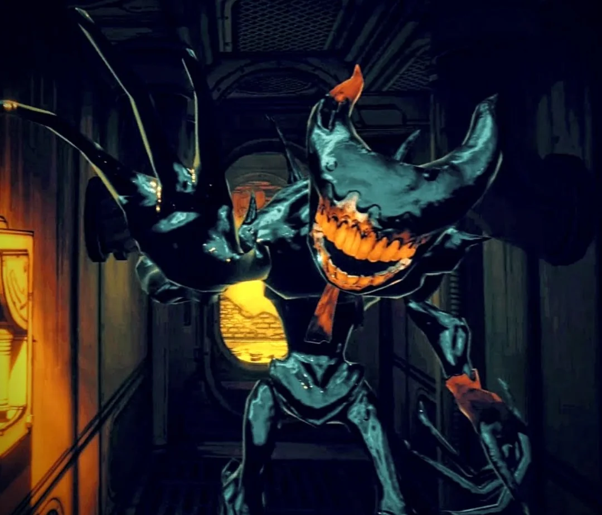
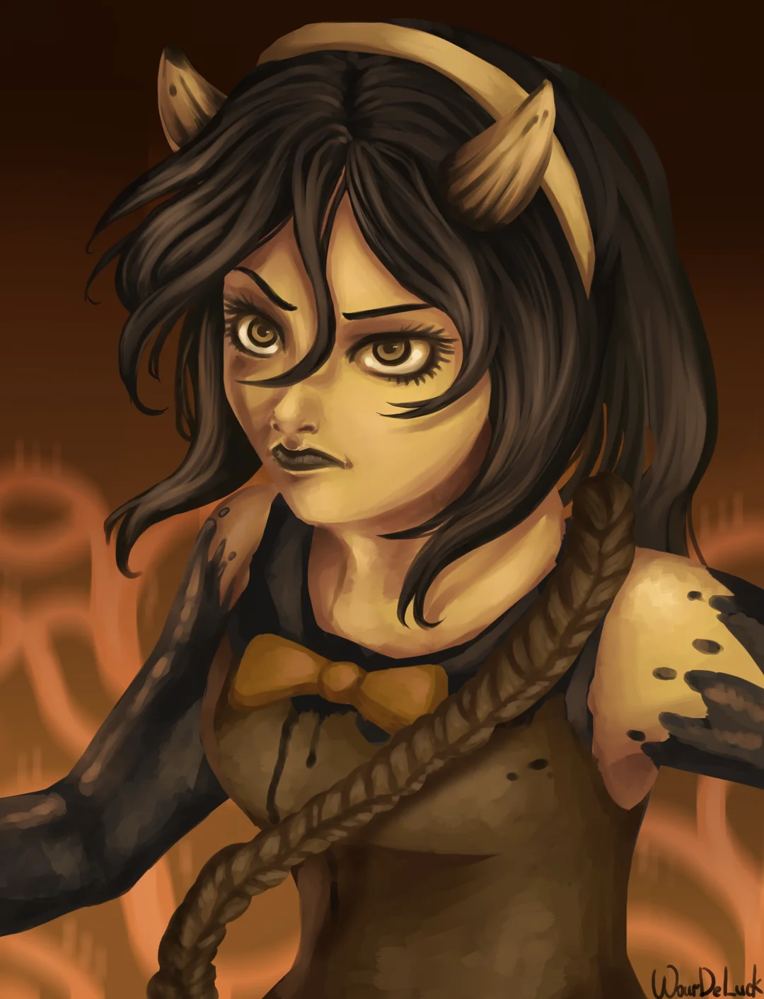

Bendy and the Dark Revival
Em Bendy and the Dark Revival, você acompanha Audrey Drew, uma animadora que acaba presa dentro de um mundo de
tinta criado por uma máquina misteriosa. Esse lugar é uma versão distorcida de um estúdio de animação, cheio de
criaturas hostis e dominado pelo Ink Demon, que persegue tudo que se move. Enquanto tenta sobreviver, Audrey
explora o ambiente, descobre segredos sobre o passado do estúdio e percebe que aquele mundo funciona em um ciclo
controlado por um vilão. Ao longo da jornada, ela também descobre que tem uma ligação direta com a tinta e com a
própria origem daquele lugar, e precisa usar isso para quebrar o ciclo e tentar escapar.
Bendy the Ink Demon
Bendy é uma criação da Ink Machine em Bendy and the Ink Machine, feita no Joey Drew Studios para dar vida ao
personagem de desenho. O experimento falhou, gerando uma versão instável e monstruosa conhecida como Ink
Demon. Ele se torna a principal ameaça do estúdio, preso no ciclo de tinta criado por Joey Drew e
representando o resultado da ambição sem controle.

Wilson Arch
Wilson Arch é o principal antagonista de Bendy and the Dark Revival. Ele era um funcionário comum que acabou
assumindo o controle do mundo da Ink Machine, usando as regras do ciclo a seu favor. Wilson manipula tudo nos
bastidores, prende criaturas (inclusive o Ink Demon) e tenta impor ordem naquele caos. No fim, sua obsessão
por controle revela que ele só virou mais uma peça corrompida dentro do próprio sistema que queria dominar.

Audrey Drew
Audrey Drew é a protagonista de Bendy and the Dark Revival e foi criada a partir da Ink Machine como uma forma
“perfeita” de ser de tinta com consciência humana. Ela tem ligação direta com Joey Drew, sendo basicamente uma
versão criada por ele para continuar seu legado. Diferente das outras criações, Audrey consegue controlar
parcialmente seus poderes de tinta e entender o mundo ao redor. Ao longo da história, ela descobre que não é
totalmente humana e que faz parte do ciclo criado pela máquina, ficando presa nesse universo distorcido. No
final, ela aceita sua natureza e assume o controle da situação, quebrando parte do ciclo e mudando o rumo
daquele mundo de tinta.

Alisson
Allison Angel é uma das criações mais estáveis da Ink Machine em Bendy and the Ink Machine, baseada na
personagem Alice Angel, mas diferente das versões corrompidas que surgiram antes. Ela foi criada a partir da
essência de Allison Pendle, o que explica por que mantém consciência, personalidade e senso moral, ao
contrário da versão instável conhecida como Twisted Alice.
Dentro do estúdio dominado pela tinta, Allison Angel age como uma sobrevivente lúcida, conseguindo resistir à
corrupção da máquina. Ela não só entende o funcionamento daquele mundo distorcido como também decide ajudar
outros, especialmente Henry Stein, guiando ele e oferecendo suporte em momentos críticos.

Henry Stein
Henry Stein é o protagonista do jogo Bendy and the Ink Machine, um ex-animador do Joey Drew Studios que
retorna ao
estúdio e acaba preso no ciclo criado pela Ink Machine. Ao longo da história, ele enfrenta as criações de
tinta e descobre os experimentos por trás da máquina, tentando sobreviver e quebrar o loop. No fim, ele
representa alguém tentando escapar das consequências da ambição de Joey Drew.